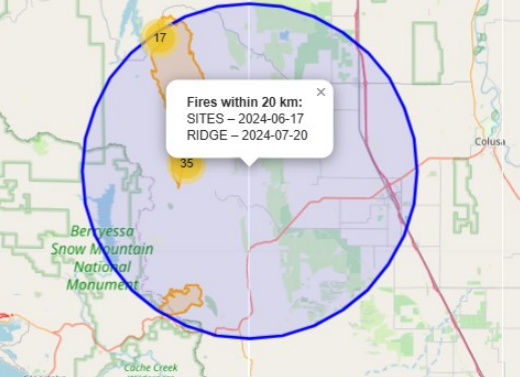
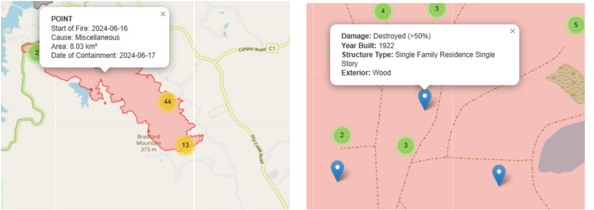

A Web Application to Explore and Analyze 2024 California Wildfire Data
A group project with Anne K. in the class "Application Development" in summerterm 25.

Introduction
An increase in temperature due to climate change has also led to a rise in the number of wildfires worldwide. California is also in the news every year due to wildfires across the state. The state already provides several interactive dashboards for private users to view historical and current fire events (see official Dashboard). The dashboard of California's Fire Department can be explored by the user to gain more information about fires. However, their resolution is based on an ESRI product.
For this class, we wanted to develop an open-source application that is free from proprietary products. The underlying research question is: how can we provide fire data from 2024 for the state of California in an interactive, user-friendly WebGIS application that enables users to explore fire locations, causes, affected areas and containment dates based on open-source products?
Methods
The project is implemented as a browser-based WebGIS application using JavaScript and libraries such as Leaflet and Turf.js for the frontend. For the backend, Python with GeoDjango is used for data management.
Backend (Python / GeoDjango)
- Data storage: official wildfire data from California's wildfire department is stored in a PostGIS-enabled PostgreSQL database for efficient spatial queries.
- Data preparation & preprocessing: A geoapp was created with the Django framework. Two models were defined for two datasets (wildfire perimeters (polygons)& damaged buildings (points)). Pre-processing on the server side ensures that attributes are cleaned and standardized before sending them to the frontend.
- API endpoints: Django REST Framework (DRF) endpoints, such as /api/wildfires/ were created, to return data in GeoJSON format. Filter parameters (e.g., cause=, start_date=) can be passed via query strings.
- Integretion with Leaflet: The frontend fetches GeoJSON from these endpoints using fetch() calls and dynamically updates the map layer without reloading the page.
Frontend (JavaScript / Leaflet / Turf.js)
The frontend structure is made of a base.html where the base structure is configured, an authors.html and a map.html, where we linked all documents together, as well as styling and configuring the legend, sidebar and infocard.The JavaScript file called map.js contains most of the code connecting backend and frontend.
- Map setup: Leaflet was used to create the open-source base map layers, load wildfire polygons, damage points and style them dynamically.
- Filtering functionality: A dropdown menu allows filtering by wildfire cause, updating the map layer in real time.
- Proximity analysis tool: A custom Leaflet control was implemented to let the user input a radius (in km). When clicking on the map, Turf.js will generate a buffer around the click point, and all intersecting wildfires will be identified and highlighted (Figure 1).
- User interaction: For each intersecting fire, a popup displays the key attributes name of the fire and alarm date. Non-intersecting fires will revert to default styling. When clicking on wildfires or mapped buildings in general, according popups provide information (Figure 2).


Result
I would have liked to share a link to the live web application, but since GitHub Pages only supports static frontend sites, this was not possible. Instead, the following video showcases the final result.
Conclusion
This project was a highly rewarding experience. While it came with several challenges that required significant time and effort to resolve, the results ultimately made the work worthwhile. One of the most valuable aspects of this project was gaining a deeper understanding of how frontend and backend components interact within a web application. Working with a development server and the Django framework was new to me, but through continuous practice and the use of tutorials, I was able to build a solid understanding. Additionally, the use of generative AI tools proved very helpful in debugging and problem-solving, significantly reducing development time. Maybe - when there is more time - I will extent the functions to enable more analyzes And also publish it properly on the web and not just as a video! The source code for this project is available on my GitHub.